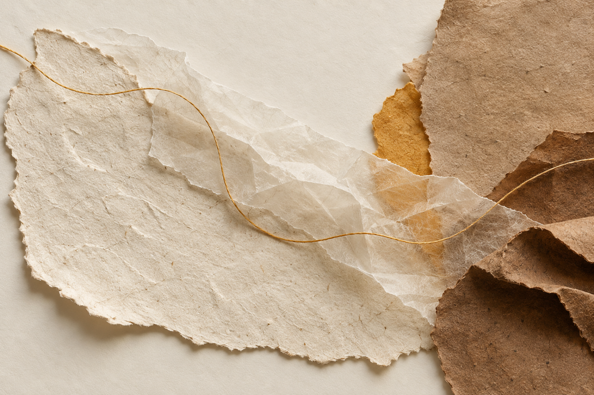

在安靜裡，聽見身體的細微回應
一次練習，一段關於停留與感受的記錄。從呼吸開始，觀察當下的身體經驗，也為尚未能說清楚的感覺留一點空間。

圖片向頁面邊界延伸，文字維持穩定軸線
圖像可以帶來呼吸，但正文仍需要可預期的閱讀位置。圖片突破內容留白，文字始終沿同一條內側軸線排列；區塊之間不再加上分隔線，讓閱讀節奏由留白自然形成。
把注意力留在身體裡
有時候，我們會很快地替感受找出原因，也很快地想知道下一步該怎麼做。可是身體的經驗不一定立刻成為答案，它可能只是一點緊、一段沉默，或某個突然變得清楚的呼吸。
練習並不是要求自己感覺得更多，而是讓已經存在的感受有被注意的機會。當我們不急著推開或解釋，原本模糊的經驗便可能慢慢呈現自己的輪廓。
這段時間可以很短。只是坐著，感覺腳底與地面的接觸，或察覺背部被椅子承接的位置。每一次回來，都在重新建立與身體之間的聯繫。
讓停頓成為練習的一部分
停頓不是空白，也不是落後。它讓感受有時間完成，讓注意力不必急著離開。
可以從最簡單的提問開始：現在有哪些地方被支撐？呼吸在哪裡比較容易發生？
從細節回到整體
當一個局部的感受被辨認，注意力也能重新回到完整的身體。這不是尋找標準答案，而是練習在變化裡保持聯繫。